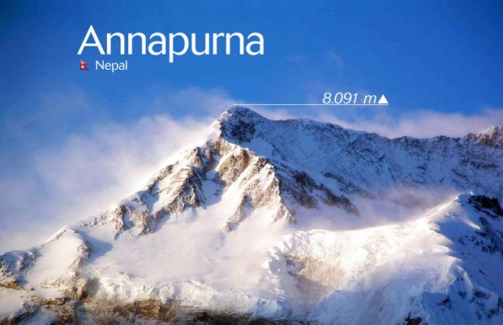

Annapurna

Altitud:8091m
Localización: cordillera del Himalaya(Nepal)
Coordenadas:
28°35′46″N 83°49′13″E
Significado: diosa de la cosecha
Fue el primer ocho mil en ser escalado, en 1950
Era el ocho mil mas peligroso hasta marzo de 2012